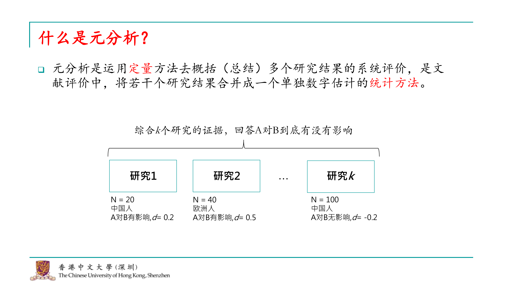
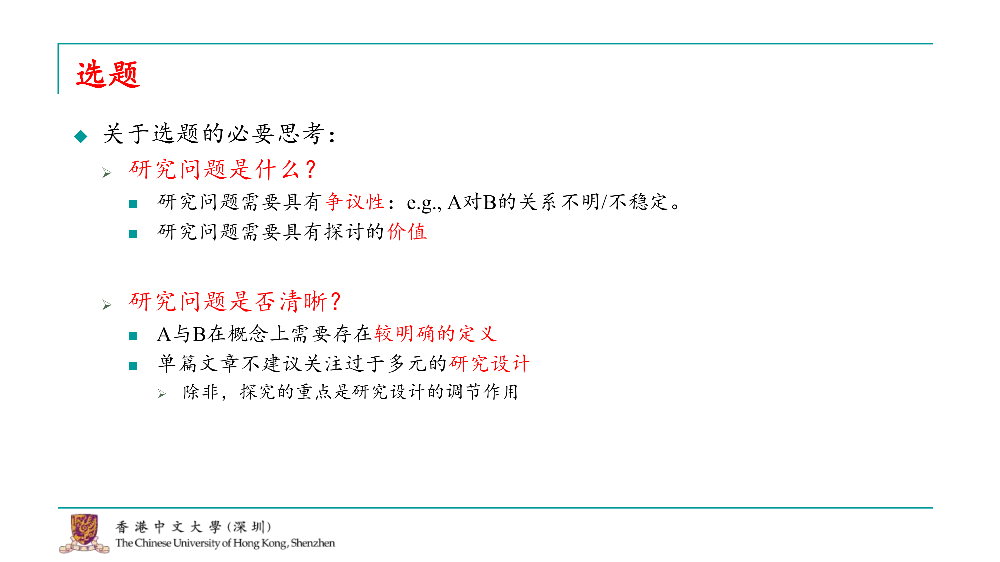
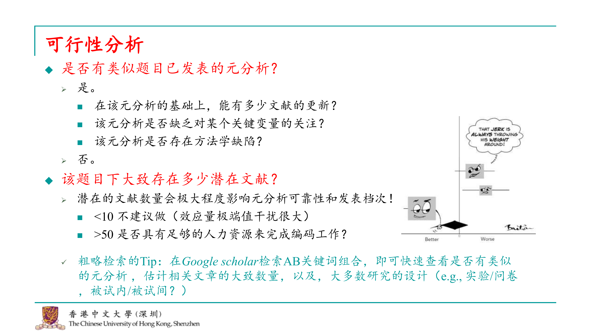
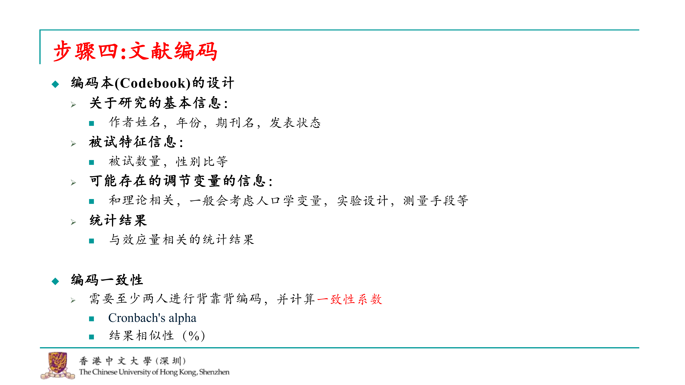
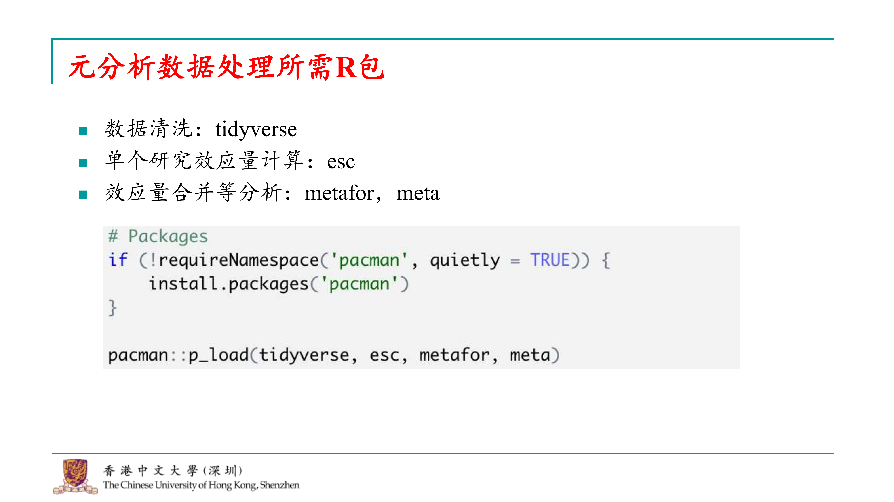
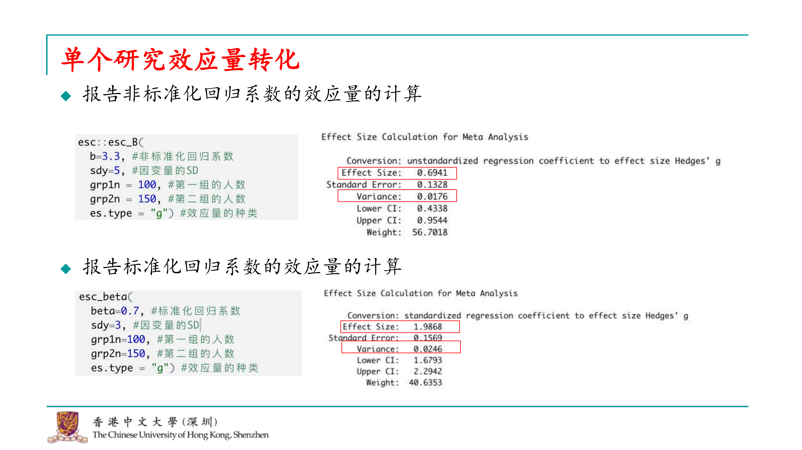
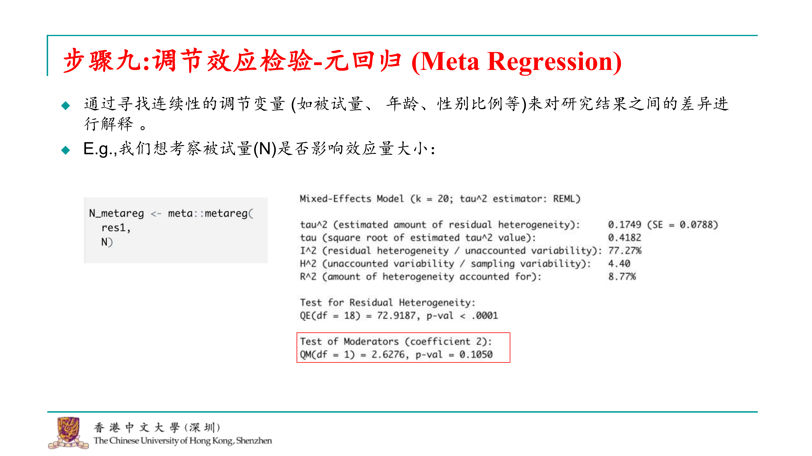
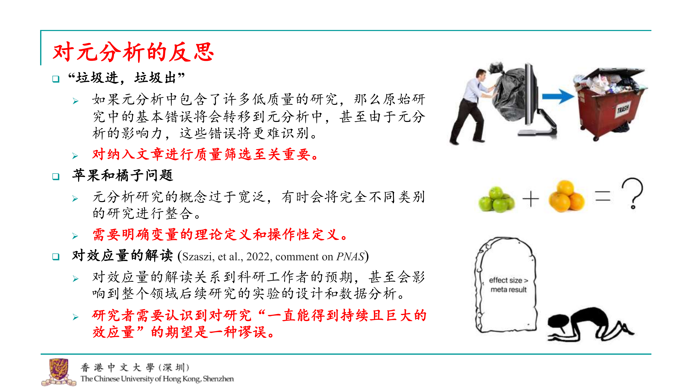

Chapter 14 第十四讲：心理学元分析入门
大家好，我是刘铮。很高兴受到传鹏的邀请，有机会在这里与大家分享一些心理学元分析的知识。虽然我不是这方面的专家，但很乐意借此机会和大家交流，共同学习。 目前我正在香港中文大学深圳校区攻读应用心理学博士学位。今天我想和大家探讨的主题是“心理学元分析的入门及其应用、设计与实施”。 正如传鹏所说，进行元分析时，对我来说，理论知识固然重要，但实际操作更能加深理解。实际上，元分析的代码编写并不复杂，其背后的理论、框架和流程更为关键。因此，这节课对R语言代码的要求不会像之前那么高，相对结构方程模型等，代码会更加简单。 课程的前半部分，大家可能不需要使用R语言，主要是听我讲解。到了后半部分，我们会一起使用数据，在R语言环境中逐步操作，体验整个元分析的过程。希望通过这节课，大家能够对进行元分析充满信心，这是我的教学目标。OK，让我们开始吧。
14.1 什么是元分析

好的，让我们开始今天的课程。首先，我想对元分析做一个简单的介绍。尽管我知道心理学背景的学生可能对元分析有一定的了解，毕竟在许多期刊上我们都看到过元分析的研究发表。不过，我还是想再次强调一下元分析的定义。
元分析是一种统计方法，它通过定量手段综合多个研究的结果，将众多研究的效应量合并为一个单一的数字，并提供其他统计量来衡量整体效应。这种方法能够帮助我们更准确地理解某一研究领域的问题。
例如，在心理学中，我们经常探讨两个变量a和b之间的关系，比如a是否对b有影响。传统的研究方法可能涉及实验设计或问卷调查，并基于样本量得出结论。假设我们发现a对b有一个小的效应量，比如0.2。其他研究者可能在不同群体中进行类似的研究，比如在欧洲人中的效应量可能是0.5。如果总共有k个这样的研究，元分析就能综合这些研究的证据，提供一个更精确的答案，即a是否真的对b有影响。
此外，元分析还可以帮助我们探索不同研究中可能存在的调节效应。例如，如果不同的研究收集了不同的被试群体，我们可以通过元分析来观察被试群体的不同是否会对a和b之间的关系产生影响。这也是元分析能够做到的事情。
通过元分析，我们不仅能够得到更可靠的结论，还能够识别出影响效应大小的潜在因素，从而加深我们对研究领域的理解。现在，让我们进一步探讨元分析的具体应用和实施步骤。
 当我们提到元分析时，经常会与综述和系统性综述一起讨论。这三个概念之间的关系其实很清晰。首先，综述通常是探索一个较宽泛问题的过程，比如在撰写毕业论文时，你可能会写一篇综述来概述你的研究范围。综述通常是定性的，不涉及对过去数据的统计分析，也不需要明确地告诉读者你系统地搜索了多少文献以及如何得出结论。
系统性综述则更加严格，它关注的问题范围更小，既可以是定性的也可以是定量的。进行系统性综述时，你必须有一个明确的搜索策略，比如研究a对b的关系时，你需要包含所有已发表的关于这一关系的论文。你可能基于一定的标准排除一些文章，然后对剩余的论文进行总结，比如通过表格来展示每篇论文的结论。系统性综述可能会定性地综合这些结论来讨论a对b的关系。
元分析则是系统性综述的进一步发展。在元分析中，你需要从通过搜索策略找到的论文中提取可用的研究数据，并进行统计分析，以量化的方式回答a对b关系的问题。元分析会计算统计学上的显著性，提供关于效应量大小的估计。
综述的范围最广，系统性综述是综述中的一个更聚焦的部分，而元分析则可以是系统性综述的一部分，也可以独立进行。我们经常看到元分析与系统性综述一起出现在论文中，但元分析也可以单独进行，不一定需要先做系统性综述。
当我们提到元分析时，经常会与综述和系统性综述一起讨论。这三个概念之间的关系其实很清晰。首先，综述通常是探索一个较宽泛问题的过程，比如在撰写毕业论文时，你可能会写一篇综述来概述你的研究范围。综述通常是定性的，不涉及对过去数据的统计分析，也不需要明确地告诉读者你系统地搜索了多少文献以及如何得出结论。
系统性综述则更加严格，它关注的问题范围更小，既可以是定性的也可以是定量的。进行系统性综述时，你必须有一个明确的搜索策略，比如研究a对b的关系时，你需要包含所有已发表的关于这一关系的论文。你可能基于一定的标准排除一些文章，然后对剩余的论文进行总结，比如通过表格来展示每篇论文的结论。系统性综述可能会定性地综合这些结论来讨论a对b的关系。
元分析则是系统性综述的进一步发展。在元分析中，你需要从通过搜索策略找到的论文中提取可用的研究数据，并进行统计分析，以量化的方式回答a对b关系的问题。元分析会计算统计学上的显著性，提供关于效应量大小的估计。
综述的范围最广，系统性综述是综述中的一个更聚焦的部分，而元分析则可以是系统性综述的一部分，也可以独立进行。我们经常看到元分析与系统性综述一起出现在论文中，但元分析也可以单独进行，不一定需要先做系统性综述。

元分析的两个基础功能我已经在定义时提到。首先，它能够综合一个领域的整体效应，回答诸如a对b是否有影响的问题。此外，元分析还可以检验效应的边界条件，即调节效应，比如探讨是否存在某些变量（如c、d、e、f）可能对a和b之间的影响具有调节作用。 但元分析的功能远不止这些。在心理学领域，元分析的应用已经变得非常多样化。例如，在我们研究的风险决策领域，我经常看到一些高级文章使用元分析来汇聚大量数据，以检验不同的理论预测。如果一个理论预测人在某种情况下是风险偏好的，而另一个理论预测人在相同情况下是风险规避的，通过元分析收集的数据，我们可以检验这些竞争理论的准确性，并可能发现某些理论的预测并不如其他理论那样准确。这样的发现可能会导致某些理论需要更新或修正。这些都是元分析在较高层次上能够实现的功能。
 我们经常听到元分析被称为“毕业神器”或“灌水利器”，这些称呼其实有一定的道理。元分析的研究流程非常固定，基于我的经验，我总结出了一个十步的固定流程。尽管有一些高阶的元分析可能会进行更复杂的检验，比如对抗理论的检验，但基本的这十步流程在所有元分析中都是必须经历的。这些高阶的元分析可能会在完成这十步之后进行其他工作，但这十步是每个元分析的基础。
今天我们将从这十步的第一步开始，逐步讲解。我将这个流程分为三大块：
第一块是元分析的选题以及评估所选题目的可行性。
第二块涉及到如何收集进行元分析所需的数据。
第三块则是如何对收集到的数据进行统计分析，以及如何撰写结果报告。
通过掌握这三大块的步骤，你将能够熟练地进行元分析，并从中得出有意义的结论。现在，让我们开始详细讨论这十步流程。
我们经常听到元分析被称为“毕业神器”或“灌水利器”，这些称呼其实有一定的道理。元分析的研究流程非常固定，基于我的经验，我总结出了一个十步的固定流程。尽管有一些高阶的元分析可能会进行更复杂的检验，比如对抗理论的检验，但基本的这十步流程在所有元分析中都是必须经历的。这些高阶的元分析可能会在完成这十步之后进行其他工作，但这十步是每个元分析的基础。
今天我们将从这十步的第一步开始，逐步讲解。我将这个流程分为三大块：
第一块是元分析的选题以及评估所选题目的可行性。
第二块涉及到如何收集进行元分析所需的数据。
第三块则是如何对收集到的数据进行统计分析，以及如何撰写结果报告。
通过掌握这三大块的步骤，你将能够熟练地进行元分析，并从中得出有意义的结论。现在，让我们开始详细讨论这十步流程。
14.2 元分析的实施
 实施元分析时，选题是至关重要的第一步。首先，你需要明确你的研究问题，例如探讨a对b的关系。这个问题应该具有一定的争议性，在你的研究领域内，关于a对b的关系可能存在不同的观点和结论。这样的争议性话题更适合使用元分析的方法来探讨。同时，这个问题应该是大家普遍关注的，具有探讨的价值。 第二步是明确研究问题的具体性。你需要清晰地定义a和b的概念，避免多元的定义。如果这个阶段没有考虑清楚，后续的文献检索将会遇到困难。 此外，如果你打算进行的是一个较小的元分析，建议不要纳入过于多元的研究设计。例如，如果你的研究问题通常使用实验法或问卷法，并且有多种测量工具，你可能需要做出取舍。过于多元的研究方法可能会影响效应量的转换和比较，有时甚至会影响到审稿人对研究结果的评价。除非你的研究重点是探究问卷法和实验法在效应量上的差异，并将研究设计作为一个调节变量，否则建议在单个元分析中不要纳入太多元的研究设计。

确定了研究问题之后，下一步是评估这个研究问题的可行性。这里有几个关键点需要考虑： 1. 检查已有研究：首先，你需要查看是否已经有人发表了关于这个主题的元分析。如果有的话，并不意味着你不能进行你的研究，但你需要考虑是否能够为已有的研究增添新的内容。这可能包括更新文献、探索新的调节效应，或者纠正之前研究的方法学缺陷。 2. 文献量：如果你决定进行元分析，你需要考虑你将纳入的文献量。文献量对于元分析的重要性非常高，因为它直接影响到你研究的稳健性和发表的可能性。一般而言，心理学领域的元分析至少应该包括大约十篇文献，否则可能被认为不够稳健。然而，如果文献量过大，比如超过50篇，你可能需要更多的人力资源来进行编码工作，因为通常需要至少两个独立编码者来确保准确性。 3. 检索技巧：为了确定是否已经存在关于你的研究问题的元分析，你可以在Google Scholar上搜索a和b的近义词组合。通过阅读搜索结果的标题，你可以快速了解已有的研究设计类型，比如问卷法或实验法，以及它们是使用被试内设计还是被试间设计。 总之，评估研究问题的可行性是一个重要的步骤，它确保你的元分析既有学术价值，又能在实际操作中得以实施。

好的，今天我会以我和传鹏之前合作发表的一篇元分析文章为例，来讲解元分析的实施过程。这样做的目的是为了让讲解更加具体，让大家在实际操作时能够更好地理解和应用所学的知识。使用真实的研究案例作为背景，相比使用虚拟数据，可以让大家对元分析的概念和方法有更深刻的理解。接下来，我将详细介绍我们这篇文章的研究背景、方法、过程和结果，以及我们在实践中遇到的一些挑战和解决方案。这样，大家在进行自己的元分析时，可以参考我们的经验，少走一些弯路。

我们这篇文章的研究背景集中在自我信息加工领域，这是一个大家可能都比较熟悉的领域。在自我信息加工中，有一个广为人知的效应，称为自我参照效应或自我优势效应。这个效应表明，我们的大脑倾向于优先加工与自我相关的信息，这些信息也更难以被忽视和遗忘。比如，在嘈杂的环境中，如果有人叫你的名字，你往往能够过滤掉其他声音而捕捉到自己的名字，这就是自我参照效应的一个例子。
我们的研究目的是想探索自我参照效应在教育教学中可能的应用。具体来说，我们想要了解，如果在教学中融入自我参照编码，比如说在学习新词汇时，让学生记住“你是勇敢的”，这样的自我参照提示是否能够增强学习效果。我们想要探究的是，自我参照效应是否能够对学习效果产生积极影响，特别是在记忆和学习任务中。

我们的研究问题非常直接。首先，我们关注的是大量使用自我参照编码的文章，这些文章检验了这种效应在教育教学中是否有效。其次，如果自我参照编码在教育教学中可能有效或无效，我们想探讨它是否受到某些边界条件的影响。例如，教育教学的实施者或所使用的材料类型可能会产生边界效应。 接下来，我们研究了这些研究的大致设计。通过Google Scholar的搜索，我们发现这些研究通常采用实验组和对照组的设计。实验组的学生会学习包含自我参照编码的学习材料，例如“你是勇敢的”或“你是自信的、阳光的”。而对照组可能直接让学生记忆这些词汇，或使用其他不含自我参照编码的学习策略。 我们还研究了是否有类似的元分析发表。由于这个领域可能是认知科学和教育学的交叉领域，我们并没有找到非常相似主题的元分析。虽然教育学中已经有一些相关的研究，但它们被归入了另一个框架，并不是在认知和教育的框架下。因此，与我们进行的研究可能并不会产生冲突。我们发现相关文献的数量超过了十篇，因此我们认为这是一个可行的小项目。最终，我们确定了可以进行这样的研究。

既然我们已经确定了研究主题，对于元分析而言，第二步就是进行文献检索。这包括确定文章的关键词、检索关键词，以及需要检索的数据库。关键词的选取应围绕我们关注的自我参照编码在教育教学中应用的核心，包括与自我参照编码、学习效果和教育教学相关的一系列词汇。 关键词选定后，我们需要选择数据库。对于元分析，建议至少选择三个以上的数据库，并且最好是领域内公认的数据库。例如，在教育心理学领域，ERIC或PsycINFO是常用的数据库。如果研究领域有特定的数据库，如经管或管理方向，应当将这些数据库纳入检索范围。一个实用的方法是查阅领域内发表的权威元分析文章，以了解它们通常使用哪些数据库。 除了在数据库中检索，审稿人通常还会要求至少进行一种补充检索。补充检索有两种类型：一种是回溯检索（backward search），另一种是前瞻检索（forward search）。在回溯检索中，我们会查看相关元分析中纳入的研究，确保我们没有遗漏任何重要研究。前瞻检索则是查看在我们已发表的元分析之后，是否有新的研究发表，这些研究也应该被纳入考虑。 因此，我们的研究应该包含至少一种补充检索方法，以确保文献的全面性和时效性。

好的，接下来我们讨论如何在不同数据库中进行检索。虽然各个数据库可能有一些细微的差别，但它们的搜索结构基本上是相似的。以PubMed为例，我们可以这样进行检索： 1. 打开PubMed网站，进入搜索界面。 2. 由于我们是进行元分析，通常会使用高级搜索（advance search）选项。 3. 在高级搜索中，开始输入关键词。我们会按照类别逐个输入关键词。例如，首先输入与自我参照编码相关的关键词。 4. 在同一类别中，使用“OR”运算符将关键词连接起来，这样可以将搜索范围扩大到该类别下的所有相关内容。 5. 输入完一个类别的关键词后，点击“添加”（add），然后继续输入下一个类别的关键词，比如与学习相关的词汇。 6. 重复这个过程，直到所有相关的关键词类别都被输入并添加。 7. 最后，点击“检索”按钮，系统会显示出搜索结果。

如果像我前几天那样进行检索，可能会得到51个结果。要将这些结果导出，可以按照以下步骤操作： 1. 点击“发送至”（Send to）按钮。 2. 选择“引文管理器”（Citation Manager），因为我们会使用EndNote进行文献管理，这会使后续的文章筛选和整理更加方便。 3. 点击后，系统会将所选文献的引用信息打包下载为一个文件。 4. 在EndNote中打开这个文件，会看到所有刚刚打包的引用都会显示在这里。 这样，就完成了文献检索的整个过程。

在完成文献检索之后，下一步是进行文献筛选。为此，我们需要制定一套文献的纳入标准。这些标准相对标准化，包括对文献本身的一些要求。例如，我们可能仅关注英语文献，认为这已经足够。因此，我们会要求文章必须是英文撰写。关于主题，我们要求文献必须与教育教学相关，因为即便使用了教育教学的关键词进行数据库搜索，结果仍然可能比较宽泛。因此，我们需要仔细地逐一挑选。 我们希望查看在普通人群中的效果，所以选择以普通人为被试的研究。在研究设计方面，我们要求必须有独立比较组，即实验条件下的对照组。那些仅采用单组设计、缺乏对照组的研究可能在我们看来不够严谨，因此会被排除。 在测量方面，我们同样有要求。例如，我们关注的是教育效果或学习效果，因此需要报告与学习过程或表现相关的指标。此外，我们还需要完整的数据，如总被试数、均值和标准差，或者可能提供的t检验、f检验结果等，这些数据能帮助我们计算效应量。如果文章中没有这些统计数据，比如一些较早的心理学文章，那么对于元分析来说，这些数据就无法使用。

好的，那么元分析的前期流程，实际上可以用一个PRISMA流程图来展示。这几乎是每个元分析都要求做的事情。PRISMA流程图的网站链接我也已经提供，大家可以下载。网站上有一个模板，上面没有填写具体内容，你可以根据这个模板来填写你的数据库检索信息，以及最终纳入的文章。 在我们这个研究中，我们首先从数据库进行检索，然后从每个数据库得到一系列文章。在这个阶段，我们可能会进行去重处理，因为每个数据库可能会出现相似的文章。去重之后，我们根据之前的排除标准开始筛选这些文章。一开始可能会进行粗筛，比如手动找出重复的文章，非英语的文章，或者与主题完全不相关的文章。这样做一轮之后，可能会有些文章难以判断，这时你就需要查找这些文章的全文PDF，仔细阅读摘要，才能判断它们是否有用。 到了这个步骤，你通过阅读摘要来判断文章是否可以被纳入。这就是数据库检索的过程。同时，我们还会进行补充检索。将数据库检索和补充检索的结果合并起来，就得到了我们最终纳入的研究。PRISMA流程图能够清晰地展示从检索到筛选的整个过程，确保研究的透明度和复现性。

完成文献筛选后，接下来的步骤是对我们已经纳入的文献进行编码。编码过程中，我们需要设计一个编码本（code book），这是一个工具，用于指导编码者从文章中摘录哪些信息。 编码本通常会包含研究的基本信息，如作者、年份、期刊名、发表状态（已发表或如论文集等）、被试的特征（总被试数、性别比等），以及任何你关注的调节变量，这些可能与你的理论关注点相关。还可能包括人口学变量、实验设计、不同测量是否可能导致不同结果等信息，这些都是与每篇文章关注的理论密切相关的。 此外，编码本还会包含统计结果，这些是与效应量计算相关的统计结果。在编码过程中，为了保证严谨性，至少需要两个人进行背靠背的编码，一个人单独完成是不够的。这也是元分析中通常需要报告的内容。 两个人根据编码本进行背靠背编码后，需要讨论并对比结果。如果发现不一致的地方，需要检查可能的错误，并进行修正。编码结束后，需要计算一致性系数，以表明基于同一编码本，两人摘录的结果是可信的。常用的一致性系数有克隆巴克的阿尔法（Cronbach’s alpha）或者结果相似性（百分比相似）。在实际应用中，α系数使用得更多，如果报告相似性，审稿人可能会要求你计算α系数。

尽管这些步骤听起来可能比较简单，但对于一篇元分析来说，完成这些步骤实际上已经完成了大部分工作，除了撰写文章本身。到了这一步，你基本上已经整理出了一个包含纳入研究的信息表，这个信息表将包含在你的文章中。 信息表会包括文章的基本信息，如作者、年份、期刊等，以及研究的具体信息，比如被试量、性别比例、平均年龄等。由于我们关注的是教育教学的结果，结果变量可能会有很多种，比如测试准确率、记忆力等，这些都会被包括在内。 此外，信息表还会包括我们选定的调节变量，我们可能没有选择很多，但选择了几个我们认为对研究结果有重要影响的变量。例如，学生的群体、材料的正负性（中性材料、引发负面情绪的材料等）、学习材料的呈现方式（电脑或纸质）、实验环境（实验室或自由学习环境）等。这些调节变量是根据现有理论选择的，我们认为它们可能会对效应量产生影响。 这个信息表是元分析中非常关键的部分，因为它展示了研究的详细信息和数据，为后续的分析和讨论提供了基础。在撰写文章时，这个信息表将作为支持和验证你研究结果的重要依据。

好的，到了这一步，如果你已经完成了上述所有步骤，那么我们就可以进入数据分析环节了。现在，你可以打开之前下载的R代码和我准备的数据。如果你还没有下载，可以先跟着这个流程了解一下，然后回去再自己尝试运行。 进行元分析的数据处理实际上非常简单，我们将会使用几个R包来进行数据清洗，比如tidyverse。对于单个效应量的计算，有很多R包可以使用，甚至你可以自己编写函数来计算。我个人比较喜欢使用esc包。而对于效应量的合并，元分析中两个非常著名的R包是metafor和meta。 首先，我们需要编写代码来加载所需的R包。这段代码会检查你的电脑是否已经安装了这些包，如果没有安装，它将帮助你安装。然后，我们就可以加载这些包，准备进行数据分析了。

我们首先需要加载所需的R包。然后，我们进入到元分析中比较复杂的步骤，我个人认为这是最麻烦的一个步骤。之后的步骤实际上都很简单，通常只需要一行代码就可以完成。 # 加载所需R包
# Packages
if (!requireNamespace('pacman', quietly = TRUE)) {
install.packages('pacman')
}
pacman::p_load(tidyverse, esc, metafor, meta)这个复杂的步骤是对单个研究进行效应量的转化。首先，我们回顾一下什么是效应量。效应量是衡量实验强度的一个指标，它不受样本容量大小的影响，因此在不同的研究之间具有可比性。这也是为什么在进行各种测试时，我们通常被要求报告效应量的原因，便于进行元分析的人能够汇总这些研究的效应。
效应量的种类有很多，我引用了一篇郑昊敏老师的文章，其中将效应量分为三类：
1.差异类的效应量：这类效应量常用于实验研究，衡量两个或多个组之间的差异。 2.相关类的效应量：这类效应量通常出现在问卷研究中，用于衡量两个或多个变量之间的共变程度。可能用到的有相关系数（correlation）、标准化相关系数、标准化回归系数等。 3.组重叠效应量：这类效应量在心理学研究中较为少见，它衡量的是两个分布的重叠程度。 在进行元分析时，我们需要根据研究类型和所报告的统计结果选择合适的效应量，并对其进行转化，以便于后续的分析和合并。


关于效应量的计算，我在这里可能不会详细讲解公式的具体内容，但我推荐了Cooper的这本书。在这本书中，他详细列出了各种情况下如何计算效应量，比如独立样本、配对样本、相关研究等。有了这样的参考，如果你遇到了一些难以处理的效应量转换，比如esc包中没有包含的某些效应量，你可以自己编写一个函数来计算，这通常只是基本的算术操作。 由于时间限制，我可能不会深入讲解这部分内容。如果大家对计算效应量感兴趣，可以在课后自行查阅相关资料进行学习。Cooper的书籍是一个很好的资源，可以提供详细的指导和公式。此外，R语言社区也有很多资源和学习材料，可以帮助你更好地理解和实施效应量的计算。

好的，我们直接来看如何在R中使用esc包来计算单个研究的效应量。首先，我们最喜欢的是那些直接报告了最原始数据的效应量。你可能会问，如果有的研究已经报告了效应量，我是否可以直接使用，而不需要计算均值（mean）和标准差（SD）？理论上是可以的，但实际上我们可能会遇到的问题是，研究者可能并不完全理解效应量的计算，导致他们报告的效应量可能并不准确。因此，建议如果研究提供了均值和标准差，最好是自己计算一遍，这样比较保险。而且，计算均值和标准差是最简单的计算方法之一。
我们可以举一个例子，假设我们研究中看到一篇文章，它报告了两个组的被试数量以及各自的均值和标准差。比如，这篇文章测量了学习效果（comprehension），并且进行了测试（test）和重测（retest）。我们计算效应量时，可以先关注测试的结果。根据文章，对照组（control group）的均值是87.1，标准差是7.6，而实验组的均值是87，标准差是7.3。从这些数据可以看出，效应量可能不会特别大。
在R中，我们可以使用esc包中的means_d函数来计算Cohen’s d效应量。这个函数的使用非常直接，你只需要提供对照组和实验组的均值、标准差以及两组的被试数量，函数就会计算出效应量。下面是一个简单的R代码示例：
esc_mean_sd(
grp1m = 87, grp1sd = 7.3, grp1n = 29, #第一组（干预组）的Mean,SD和人数
grp2m = 87.1, grp2sd = 7.6, grp2n = 30, #第二组（控制组）的Mean,SD和人数
es.type="g")#效应量的种类##
## Effect Size Calculation for Meta Analysis
##
## Conversion: mean and sd to effect size Hedges' g
## Effect Size: -0.0132
## Standard Error: 0.2604
## Variance: 0.0678
## Lower CI: -0.5236
## Upper CI: 0.4972
## Weight: 14.7454esc包中的means_d函数需要我们提供以下信息： 1.
第一组（通常是干预组）的均值（mean）、标准差（SD）和样本量（n）。我们通常用干预组的均值减去控制组的均值来计算效应量，如果结果是正的，则说明干预组的效果更好。
2. 第二组（通常是控制组）的均值（mean）、标准差（SD）和样本量（n）。
在esc包中，你需要选择计算的是Hedges’ g还是Cohen’s
d。在元分析中，两者通常都可以使用，但如果样本量特别小，Hedges’
g因为有一个针对小样本的校正，所以可能是更好的选择。因此，通常会计算Hedges’
g。
代码运行后，我们会得到一个效应量的值。如果这个值接近于0，比如-0.01，那么这表明基本上没有效应。
对于后续的元分析，meta和metafor包对数据的要求略有不同。meta包需要方差（variance），而metafor包需要标准误（standard
error），它们之间只是差一个平方。通常，我们会选择记录方差。
在实际研究中，除了均值和标准差，我们还可能会遇到标准误（se）。有时候，人们可能会将标准误误认为是标准差，如果你错误地将标准误当作标准差来计算效应量，结果可能会有很大的不同。因此，在处理数据时，需要特别注意区分标准差和标准误。
#例：假如Dutke et al. (2016)的研究报告的SD其实是SE
esc_mean_se( #摘录时看清楚SD和SE非常重要！
grp1m = 87, grp1se = 7.3, grp1n = 29,
grp2m = 87.1, grp2se = 7.6, grp2n = 30,
es.type="g")##
## Effect Size Calculation for Meta Analysis
##
## Conversion: mean and se to effect size Hedges' g
## Effect Size: -0.0025
## Standard Error: 0.2604
## Variance: 0.0678
## Lower CI: -0.5129
## Upper CI: 0.5079
## Weight: 14.7458当然可以，以下是对提供的文字的整理和润色： 我们来进行一个假设的尝试。比如说，在我的研究中，目前报告的并不是标准差（SD），而是标准误（SE）。那么，我们应该如何计算呢？实际上，我们依然可以使用esc这个软件包。它对于均值（m）和标准误（SE）的处理非常明确。操作步骤是：首先输入第一组的人数和相应的均值及标准误，然后输入第二组的人数和相应的均值及标准误。接下来，我们就可以运行这个分析。 通过分析，我们可以看到效应量（g）的结果显示为负的0.002。这表明，对于标准差和标准误的计算，特别是当效应量较小时，它们之间的差异并不大。然而，如果效应量非常大，那么这两者之间的差异也会非常显著。如果在这个环节出现错误，那么后续的分析结果可能会出现异常，比如效应量可能会变成outliner。因此，当在进行元分析时，如果发现某些效应量异常大，那么就有必要回头检查，看看是否在数据摘录的过程中出现了问题。

在研究中，能够获取原始数据是最理想的情况，但实际上，很多研究报告并不会提供这些原始数据。相反，它们通常会报告统计分析的结果，如t检验的统计量和效应量等。在这篇文章中，研究结果显示，实验组在成绩上显著高于控制组，并报告了t检验的统计值和效应量。
虽然研究报告提供了这些信息，但我们通常对这些报告持谨慎态度，不会完全依赖于这些数据。为了验证报告中的效应量是否准确，我们可以使用esc软件包中的T检验函数来进行一些计算。这个函数会要求我们输入t值、总样本量以及效应量的类型。通过运行这个函数，我们可以得到一个效应量值。
##
## Effect Size Calculation for Meta Analysis
##
## Conversion: t-value to effect size Hedges' g
## Effect Size: 0.9236
## Standard Error: 0.3333
## Variance: 0.1111
## Lower CI: 0.2703
## Upper CI: 1.5769
## Weight: 9.0009例如，我们运行了这个函数后，发现得到的效应量为0.92，这表明作者在报告中提供的效应量是非常准确的。然后就可以摘录effect size和variance，以备后续的元分析。

如果我们遇到的是相关研究，这类研究通常会报告相关系数或其他类型的回归系数。虽然我们的研究可能没有涉及问卷类数据，也不会进行相关效应量的转换，但如果我们遇到需要处理这类数据的情况，我们可以使用esc软件包来进行效应量的转换。
## 研究报告非标准化回归系数b
esc::esc_B(
b=3.3, #非标准化回归系数
sdy=5, #因变量的SD
grp1n = 100, #第一组的人数
grp2n = 150, #第二组的人数
es.type = "g") #效应量的种类##
## Effect Size Calculation for Meta Analysis
##
## Conversion: unstandardized regression coefficient to effect size Hedges' g
## Effect Size: 0.6941
## Standard Error: 0.1328
## Variance: 0.0176
## Lower CI: 0.4338
## Upper CI: 0.9544
## Weight: 56.7018例如，如果我们有一个研究报告了一个非标准化的回归系数，假设这个系数是3.3，我们还需要知道因变量的标准差（SD），以及两组的样本量。我们需要将这些信息输入到esc软件包中，并指定效应量的类型。通过运行相应的代码，我们可以计算出效应量。
## 研究报告标准化回归系数beta
esc_beta(
beta=0.7, #标准化回归系数
sdy=3, #因变量的SD
grp1n=100, #第一组的人数
grp2n=150, #第二组的人数
es.type = "g") #效应量的种类##
## Effect Size Calculation for Meta Analysis
##
## Conversion: standardized regression coefficient to effect size Hedges' g
## Effect Size: 1.9868
## Standard Error: 0.1569
## Variance: 0.0246
## Lower CI: 1.6793
## Upper CI: 2.2942
## Weight: 40.6353在问卷研究中，我们可能不常看到标准化回归系数，但标准化回归系数实际上已经是一种效应量的表达形式。尽管报告中可能较少包含这类系数，但如果研究确实报告了标准化回归系数，我们同样可以使用esc软件包中的贝塔函数来计算效应量。
例如，如果我们有一个研究报告中提供了标准化回归系数（beta值），我们可以使用esc软件包中的相应函数来计算效应量。由于beta值本身可能较大，计算出的效应量也可能相对较大。我们需要将这个效应量及其变异性记录下来，以便进行后续分析。
在研究过程中，我们可能会遇到各种不同类型的效应量。正如我之前提到的，Cooper的书中已经包含了许多种类的效应量以及它们各自的计算方法。因此，如果你们在课后遇到不同的效应量，可以尝试使用Cooper提供的公式来计算，同时esc软件包也提供了许多其他效应量的计算方法，大家可以自行探索和学习。

提到的是元分析的数据收集完成后，如何进行数据分析的步骤。以下是对提供的文字的整理和润色： 一旦我们完成了对所有研究的效应量的摘录和转换，我们就可以开始进行元分析的数据分析了。这个阶段标志着数据收集阶段的完成，是元分析中一个重要的里程碑。 在元分析的数据分析过程中，我们的第一步是对收集到的多个研究的效应量进行综合。这样做的目的是为了得到一个整体的效应大小，这是回答我们研究问题的第一步。在综合效应量时，我们通常会涉及到两种模型：固定效应模型和随机效应模型。 固定效应模型假设所有研究的效应量都来自于一个单一的同质化群体。然而，在元分析中，这种情况非常少见，因为即使是同一主题下的研究，也可能来自不同的群体，并且可能受到其他变量的影响。 因此，我们更常使用的是随机效应模型。这个模型考虑到了研究间的异质性，假设效应量来自于多个不同的群体。这种模型更符合实际情况，因为它考虑了研究间的变异性。 在解读元分析的综合效应量时，学界一直存在争议。传统上，我们依赖于Cohen在1988年提出的效应量解读标准，即0.2为小效应，0.5为中等效应，0.8为大效应。然而，这些标准在元分析中的应用已经受到了学界的质疑和争议。因此，如何正确解读元分析中的效应量，目前仍然是一个开放的问题，需要根据具体的研究领域和背景来综合考虑。
为了合并效应量，我们首先需要准备好我们的数据。我已经提供了一个效应量表格的示例，我们可以使用这个表格来演示数据预处理的过程。在R语言中，数据预处理通常包括选择需要的变量、清洗数据以及确保数据格式正确等步骤。 在元分析中，我们需要从表格中选取以下变量： 1. 独立的研究编号：这是为了标识每个独立的研究。 2. 作者信息：这有助于识别和追踪各个研究。 3. 每个研究的被试数：这是计算效应量时的重要信息。 4. 计算得到的效应量及其变异性：这是进行元分析的核心数据。 5. 调节变量：如果有的话，这些变量可能对效应量有影响，也需要纳入分析。 一旦我们选择了这些变量，我们就可以运行R代码来处理数据，并查看初步的结果。这个过程可能包括数据的导入、清洗和格式化，确保所有数据都是准确无误的。完成这些步骤后，我们就可以进行效应量的合并和元分析了。
library(tidyverse)
#set working directory
cur <- getwd()
setwd(cur)
#import
effect_size <- read.csv("./data/effect_size.csv") %>%
dplyr::select(
id, #独立研究编号
Information, #作者信息
N, #被试数
ES, #刚刚计算的每个研究的效应量
VI, #刚刚计算的，效应量的variance
"Cohort" = subgroup1,
"Context" = subgroup2,
"Materials" = subgroup3,
"Valence" = subgroup4
) %>%
dplyr::filter(row_number() %in% c(1:20))
head(effect_size)## id Information N ES VI Cohort Context Materials Valence
## 1 1 Axelsson et al. (2018) 23 0.4351 0.0489 1 1 1 1
## 2 2 Cunningham et al. (2018), S1 30 1.3587 0.0827 1 1 1
## 3 3 Cunningham et al. (2018), S2 84 0.8247 0.0491 1 1 1
## 4 4 d'Ailly et al. (1997) 100 0.2108 0.0096 1 1 1 1
## 5 5 Ditman et al. (2010), S1 36 0.4210 0.0564 3 1 1 1
## 6 6 Dutke et al. (2016) 59 0.5690 0.0732 2 2 2 1在元分析中，我们通常需要将原始数据转换为特定的格式，以便进行分析。例如，如果打算使用metafor软件包，需要将数据转换为escalc格式。这个转换过程可以通过使用metafor软件包中的escalc函数来实现。
在转换数据时，需要指定计算的是哪种类型的效应量。例如，如果计算的是两组之间的标准化平均差异（standardized mean difference），应该在escalc函数中指定这一点。同时，还需要提供数据集的名称，以及效应量（yi）和效应量变异性（VI）对应的变量名。转换完成后，如果想要绘制森林图并且希望图中的数据按照效应量大小排序，可以使用order函数对数据进行排序。这样，数据就会按照效应量从小到大的顺序排列，便于后续的分析和绘图。
#数据预处理
df <- metafor::escalc( #转换成escalc的格式
measure="SMD",
data = effect_size,
yi= ES, #指定每个研究的效应量是哪列
vi = VI, #指定每个研究的效应量的variance是哪列
slab = paste("Study ID:", id)) #注明研究的label
#按效应量大小进行排序，方便后续画图展示
df <- df[order(df$yi), ]
head(df)##
## id Information N ES VI Cohort Context Materials Valence yi vi
## 12 12 Kühl and Münzer (2021), G2 60 -0.5278 0.0691 3 1 1 2 -0.5278 0.0691
## 10 10 Kühl and Zander (2017), S2 71 -0.4687 0.0583 3 1 1 2 -0.4687 0.0583
## 9 9 Kühl and Zander (2017), S1 77 -0.0640 0.0530 3 1 1 2 -0.0640 0.0530
## 18 18 Sinatra et al. (2016) 111 -0.0560 0.0541 3 1 1 1 -0.0560 0.0541
## 14 14 Li et al. (2021), S2 29 0.0477 0.0276 3 1 1 1 0.0477 0.0276
## 4 4 d'Ailly et al. (1997) 100 0.2108 0.0096 1 1 1 1 0.2108 0.0096在元分析中，计算综合效应量是一个关键步骤，这一步骤实际上可以通过一行代码来完成。我们可以使用metafor软件包中的rma函数来计算。在这个函数中，我们需要输入的是每个研究的效应量及其变异性（variance）。此外，我们还需要指定分析使用的方法（method）。通常情况下，我们可以使用函数的默认方法，除非有特定的理由需要更改。
res <- metafor::rma(
yi,#每个研究的效应量
vi,#每个研究的效应量的variance
method = "REML", #method="REML" is the default
data = df)
res##
## Random-Effects Model (k = 20; tau^2 estimator: REML)
##
## tau^2 (estimated amount of total heterogeneity): 0.1917 (SE = 0.0820)
## tau (square root of estimated tau^2 value): 0.4379
## I^2 (total heterogeneity / total variability): 80.32%
## H^2 (total variability / sampling variability): 5.08
##
## Test for Heterogeneity:
## Q(df = 19) = 81.4191, p-val < .0001
##
## Model Results:
##
## estimate se zval pval ci.lb ci.ub
## 0.4036 0.1128 3.5791 0.0003 0.1826 0.6247 ***
##
## ---
## Signif. codes: 0 '***' 0.001 '**' 0.01 '*' 0.05 '.' 0.1 ' ' 1其中，yi是效应量所在列的名称，vi是效应量变异性所在列的名称，data是已经转换为escalc格式的数据集。
运行这行代码后，我们就完成了综合效应量的计算。结果将展示出综合效应量的大小，以及相关的统计信息，如置信区间等。这样，我们就可以得到元分析的主要结果，即研究效应量的综合估计。
 在进行元分析后，我们得到的结果包含了多个统计量，但其中有一些是关键的，需要特别关注。以下是对提供的文字的整理和润色：
在元分析的结果中，我们首先需要关注的是综合效应量的估计（estimate）。这个估计值告诉我们所有研究合并后的平均效应量是多少。例如，如果综合效应量估计为0.4，这表明我们观察到的是一个小到中等大小的效应量。
除了综合效应量的估计值，我们还应该报告以下统计量： 1.
标准误（se）：这反映了效应量估计的精确度。标准误越小，估计值越精确。 2.
p值：这告诉我们综合效应量的显著性。如果p值小于常用的显著性水平（如0.05），则综合效应量在统计上是显著的。
3.
95%置信区间（CI）：这提供了一个范围，我们可以在一定程度上相信真实效应量落在这个范围内。
在报告完这些统计量后，我们通常会解释这些结果的意义。例如，如果综合效应量是小到中等大小，我们可能会说，自我参照编码在教育教学中总体上是有效的，因为它已经接近中等效应量了。我们可能会这样报告：“综合效应量显示了一个小到中等的效果（small
to moderate effect），这表明自我参照编码在教育教学中是有效的。”
这样的报告不仅提供了元分析的结果，还提供了对结果的解释，使读者能够理解这些结果对实践或理论的潜在意义。
在进行元分析后，我们得到的结果包含了多个统计量，但其中有一些是关键的，需要特别关注。以下是对提供的文字的整理和润色：
在元分析的结果中，我们首先需要关注的是综合效应量的估计（estimate）。这个估计值告诉我们所有研究合并后的平均效应量是多少。例如，如果综合效应量估计为0.4，这表明我们观察到的是一个小到中等大小的效应量。
除了综合效应量的估计值，我们还应该报告以下统计量： 1.
标准误（se）：这反映了效应量估计的精确度。标准误越小，估计值越精确。 2.
p值：这告诉我们综合效应量的显著性。如果p值小于常用的显著性水平（如0.05），则综合效应量在统计上是显著的。
3.
95%置信区间（CI）：这提供了一个范围，我们可以在一定程度上相信真实效应量落在这个范围内。
在报告完这些统计量后，我们通常会解释这些结果的意义。例如，如果综合效应量是小到中等大小，我们可能会说，自我参照编码在教育教学中总体上是有效的，因为它已经接近中等效应量了。我们可能会这样报告：“综合效应量显示了一个小到中等的效果（small
to moderate effect），这表明自我参照编码在教育教学中是有效的。”
这样的报告不仅提供了元分析的结果，还提供了对结果的解释，使读者能够理解这些结果对实践或理论的潜在意义。
在使用元分析时，确实可以采用不同的软件包来分析数据，并且可以得到类似的结果。例如，metafor和meta两个R包都可以用来进行元分析，但它们在处理数据和输出结果方面可能有所不同。
在使用meta包时，需要提供每个研究的效应量（yi）和效应量的变异性（VI）。但是，需要注意的是，meta包在计算时使用的是效应量标准误的平方，而不是效应量的变异性。因此，需要将VI的开方作为标准误输入到meta包中。此外，还需要提供研究标签（study labels）和数据集，以及指定是使用随机效应模型还是固定效应模型，并且可以选择是否输出置信区间。还需要指定效应量的度量类型，例如标准化均值差异（standardized mean difference）。
## 用meta进行效应量合并
res1 <- meta::metagen(
TE = yi,#每个研究的效应量
seTE = sqrt(vi), #每个研究的效应量的标准误
data = df,
studlab = df$id,
fixed = FALSE,
random = TRUE, #选择随机效应模型
prediction = TRUE, #是否需要CI
sm = "SMD")
res1## Number of studies: k = 20
##
## SMD 95%-CI z p-value
## Random effects model 0.4036 [ 0.1826; 0.6247] 3.58 0.0003
## Prediction interval [-0.5463; 1.3536]
##
## Quantifying heterogeneity:
## tau^2 = 0.1917 [0.0848; 0.4818]; tau = 0.4379 [0.2912; 0.6941]
## I^2 = 76.7% [64.2%; 84.8%]; H = 2.07 [1.67; 2.56]
##
## Test of heterogeneity:
## Q d.f. p-value
## 81.42 19 < 0.0001
##
## Details on meta-analytical method:
## - Inverse variance method
## - Restricted maximum-likelihood estimator for tau^2
## - Q-Profile method for confidence interval of tau^2 and tau
## - Prediction interval based on t-distribution (df = 18)其中，yi是效应量所在列的名称，VI是效应量变异性所在列的名称，your_data是包含数据的data.frame对象，study_labels是研究标签的向量，method用于指定模型类型（“random”或”fixed”），confint用于指定是否计算置信区间，measure用于指定效应量的度量类型。
运行这段代码后，meta包会提供综合效应量的估计，以及相关的统计信息，如置信区间等。这些结果应该与使用metafor包得到的结果非常相似，从而提供了两种不同方法之间的相互验证。
 在元分析中，森林图（forest
plot）是一种常用的图形展示方法，用于展示每个研究的结果，以及这些研究之间的异质性和整体效应量。森林图有助于读者直观地理解研究结果的一致性和差异性，以及综合效应量的大小。
在元分析中，森林图（forest
plot）是一种常用的图形展示方法，用于展示每个研究的结果，以及这些研究之间的异质性和整体效应量。森林图有助于读者直观地理解研究结果的一致性和差异性，以及综合效应量的大小。
森林图包含以下元素：
每个研究的效应量点估计值：这表示每个研究的效应量大小。 每个研究的95%置信区间：这表示每个效应量估计值的可信度范围。 研究标签：这有助于识别每个研究。 合并的效应量：这表示所有研究的效应量加权平均，通常位于森林图的底部，用菱形或方形表示。
## 绘制森林图
#储存图像的代码
# tiff(file="forest_overall.tiff",
# res=800,width = 9000,height = 4800)#save tiff
metafor::forest(
res,
slab = paste(df$Information),
header="Author(s) and Year" )
森林图将展示每个研究的效应量估计值和置信区间，以及合并的效应量。通过这个图形，可以直观地看到每个研究的结果，以及它们如何组合在一起形成一个整体的效应量估计。

在进行元分析并绘制了森林图之后，接下来的一步是评估研究间的异质性。异质性指的是研究结果之间的差异性和多样性，反映了研究间的变异程度。评估异质性对于确定使用固定效应模型还是随机效应模型至关重要。
异质性的来源可能包括研究设计、方法学差异、样本群体异质性、测量工具的差异等。在元分析中，如果研究间存在异质性，那么使用随机效应模型可能是更合适的选择，因为它能够更好地反映不同研究间的变异。
在metafor包中，异质性的评估通常是通过Q检验和I²统计量来进行的。这些统计量在元分析的第一步输出中已经给出，因此不需要编写新的代码。
Q检验：Q检验用于评估研究间是否存在异质性。如果Q检验的p值小于0.10，通常认为研究间存在异质性。 I²统计量：I²统计量提供了异质性大小的度量。如果I²统计量高于75%，通常认为研究间具有非常高的一致性，这支持使用随机效应模型。 在结果中，Q检验的p值小于0.001，并且I²统计量约为80%。这些结果表明这个的研究数据具有显著的异质性，因此使用随机效应模型是合理的。这也支持了进行亚组分析或元回归分析，以进一步探索异质性的来源。

好的，完成了异质性分析之后，我们接下来还需要评估元分析得到的总体效应是否稳健。这意味着我们需要检验我们的分析是否受到单个研究的影响，因为如果研究的数量很小，那么单个研究的结果可能会对整体的效应量估计产生极大的偏差。如果某个研究占据了过大的权重，它可能会导致效应量被推向极端值。因此，我们需要确保总体效应量估计的稳健性。 为了评估稳健性，我们通常会进行敏感性分析。其中一种常用的方法是“去一法”（leave one out），也就是每次分析时都排除一个研究，然后重新估计效应量。通过这种方式，我们可以观察效应量在排除每个研究后的变化情况。如果某个研究被排除后，效应量发生了显著变化，那么这个研究可能对整体结果产生了不稳健的影响。 除了去一法，当研究数量较多时，我们还可以使用其他方法，比如Gosh plot。这个方法提出的是拟合所有研究子集的模型，而不是仅拟合k-1个模型。这意味着我们会拟合2k-1个模型，从而能够更全面地观察效应量如何受到不同研究组合的影响。通过这种方式，我们可以更准确地评估效应量估计的稳健性，尤其是在研究数量较多的情况下。

在我们这里，我们先介绍去一法，因为它可能是目前大多数研究中仍在使用的方法。对于去一法，metafor包提供了一个直接的函数来进行操作，即leave_one_out()。这个函数可以接收metafor包生成的结果列表作为输入，然后输出每个研究被排除后的效应量估计。
一旦我们得到了去一法的结果，通常会进行可视化，比如绘制一个新的森林图。对于3D图，我们会告诉函数使用去一法得到的效应量估计值和标准误，并指定标题，以及如何对结果进行排序。这样，我们可以通过代码运行来查看结果。
# 敏感性分析-去1法
l1o <- metafor::leave1out(res)
#可视化
metafor::forest(
l1o$estimate,
sei = l1o$se,
header = "Ommited Study",
slab = paste(df$Information),
xlab = "Leave One Out Estimate",
refline = coef(res))
在执行去一法敏感性分析并绘制新的森林图后，我们可以观察到效应量估计值的变化，从而评估每个研究对整体效应量估计的贡献。例如，如果去掉第一个研究后，效应量估计值显著增加，这可能表明该研究的结果与整体趋势不同，或者其效应量估计可能存在偏差。 通过敏感性分析，我们可以识别出那些对整体效应量估计有显著影响的“极端”研究。例如，如果某个研究报告了一个非常大的效应量，而通过去一法分析发现，去掉这个研究后，效应量的估计值并没有发生显著变化，这表明该研究对整体效应量估计的影响并不大，从而增强了研究的稳健性。 在敏感性分析的报告或讨论中，我们会指出效应量估计值的变化范围，并解释这些变化对研究稳健性的影响。例如，如果效应量估计值的变化范围从0.34到0.45，虽然存在一定的波动，但整体变化不大，这表明研究结果是稳健的，不会因为单个研究结果的极端值而产生重大偏差。 通过这种方式，敏感性分析帮助我们理解每个研究对整体结果的影响，并评估研究的稳健性。

好的，我们进入元分析的第九步，也就是亚组分析。这一步的目的是验证第二个研究问题，即是否存在某些边界条件或调节变量，这些变量可能会影响效应量的大小。
亚组分析的目的是考察不同亚组之间的差异，并确定效应量是否存在显著性。例如，如果我们想探究自我参照效应在学习疾病信息时的应用效果是否与材料附带的情感价值有关，我们可以将学习材料分为情感价值较高的材料和情感价值中性的材料，然后比较这两种材料下的学习效果是否存在差异。
进行亚组分析的过程相当简单，只需要使用metafor包中的update函数。这个函数需要接收一个已经生成的元分析结果对象，然后指定亚组的变量，并指定使用随机效应模型。
# 调节效应检验-亚组分析
### 例子：我们想考察材料附带的情感价值（负性/非负性）是否会影响教学效果。
valence_subgroup <- stats::update(
res1,
subgroup = Valence, #亚组标记
random = TRUE,
fixed = FALSE)
valence_subgroup## Number of studies: k = 20
##
## SMD 95%-CI z p-value
## Random effects model 0.4036 [ 0.1826; 0.6247] 3.58 0.0003
## Prediction interval [-0.5463; 1.3536]
##
## Quantifying heterogeneity:
## tau^2 = 0.1917 [0.0848; 0.4818]; tau = 0.4379 [0.2912; 0.6941]
## I^2 = 76.7% [64.2%; 84.8%]; H = 2.07 [1.67; 2.56]
##
## Test of heterogeneity:
## Q d.f. p-value
## 81.42 19 < 0.0001
##
## Results for subgroups (random effects model):
## k SMD 95%-CI tau^2 tau Q I^2
## Valence = 2 4 -0.1717 [-0.5702; 0.2268] 0.1048 0.3237 8.10 63.0%
## Valence = 1 16 0.5422 [ 0.3321; 0.7523] 0.1226 0.3501 52.31 71.3%
##
## Test for subgroup differences (random effects model):
## Q d.f. p-value
## Between groups 9.65 1 0.0019
##
## Details on meta-analytical method:
## - Inverse variance method
## - Restricted maximum-likelihood estimator for tau^2
## - Q-Profile method for confidence interval of tau^2 and tau
## - Prediction interval based on t-distribution (df = 18)在执行亚组分析并查看结果后，我们可以直接从结果中看到不同亚组之间的效应量差异。例如，如果我们将材料分为情感价值较高的材料（例如复性材料）和情感价值中性的材料，我们可以观察到： -
对于情感价值较高的材料，效应量变为负数，这表明使用自我参照效应的策略在这种材料下可能不仅没有教学效果，反而可能产生负面影响。 -
对于情感价值中性的材料，效应量实际上比总体效应量还要大，这表明如果材料是中性的或者正性的，自我参照效应的教学策略效果非常好。
在报告亚组分析的结果时，我们通常会报告q检验的值和p值。如果p值小于常用的显著性水平（如0.05），则表明亚组效应是显著的，即情感价值是效应量的一个显著调节变量。
因此，亚组分析的结果可以帮助我们确定哪些因素可能会调节效应量的大小，从而更深入地理解研究结果。在报告亚组分析时，我们通常会报告q检验的值、p值，并解释这些结果对研究发现的贡献。

确实，除了类别型变量，我们也会遇到连续变量，例如年龄、性别比等。对于这些连续变量，我们可以使用元回归来探索它们与效应量之间的潜在关系。元回归是一种统计方法，用于分析一个或多个连续调节变量对元分析中效应量的影响。 
在metafor包中，进行元回归分析的函数是meta_regression()。这个函数接收元分析的结果对象作为输入，然后指定调节变量。通过运行这个函数，我们可以得到元回归分析的结果。
##
## Mixed-Effects Model (k = 20; tau^2 estimator: REML)
##
## tau^2 (estimated amount of residual heterogeneity): 0.1749 (SE = 0.0788)
## tau (square root of estimated tau^2 value): 0.4182
## I^2 (residual heterogeneity / unaccounted variability): 77.27%
## H^2 (unaccounted variability / sampling variability): 4.40
## R^2 (amount of heterogeneity accounted for): 8.77%
##
## Test for Residual Heterogeneity:
## QE(df = 18) = 72.9187, p-val < .0001
##
## Test of Moderators (coefficient 2):
## QM(df = 1) = 2.6276, p-val = 0.1050
##
## Model Results:
##
## estimate se zval pval ci.lb ci.ub
## intrcpt 0.7970 0.2665 2.9908 0.0028 0.2747 1.3193 **
## N -0.0071 0.0044 -1.6210 0.1050 -0.0157 0.0015
##
## ---
## Signif. codes: 0 '***' 0.001 '**' 0.01 '*' 0.05 '.' 0.1 ' ' 1在我们当前的研究中，由于没有采用元回归分析，我们无法直接探索被试量对效应量大小的影响。因此，我举了一个假设性的例子来说明如何进行这种探索。 假设我们想要考察被试量是否会影响效应量的大小，我们可以考虑将每个研究的被试量作为一个潜在的调节变量。为了探究这一点，我们可以将每个研究的被试量与效应量进行相关性分析，以查看它们之间是否存在显著的相关性。
在这种情况下，我们依然会报告Q值，这是用于评估研究间异质性的统计量。如果Q值表明研究间存在显著的异质性，这可能意味着被试量对效应量大小的影响不容忽视。然而，如果Q值并不显著，这可能表明被试量与效应量之间的关系并不显著。 综上所述，尽管在我们的研究中没有采用元回归分析，通过简单的相关性分析，我们可以初步了解被试量与效应量之间的关系。如果相关性分析的p值不显著，这可能意味着在当前的研究背景下，被试量对效应量大小的影响并不大。

在元分析中，发表偏倚是一个重要的问题，它指的是只有阳性结果的研究更容易被发表，而阴性结果则可能被忽视。这种偏倚会导致元分析结果的偏差，因为研究池中可能存在许多未发表的阴性结果。因此，如果一个研究者只选择发表阳性结果的研究，那么元分析得到的效应量平均估计将会偏高，从而影响结果的可靠性。
为了评估发表偏倚，研究人员可以使用漏斗图和发表偏倚检验方法，如Egger’s test、Begg’s test等。这些方法可以帮助我们了解是否存在发表偏倚，并评估其对元分析结果的影响。

在R语言中，可以使用metafor包中的函数来绘制漏斗图，例如funnel()函数。这个函数可以直接从metafor包生成的结果列表中获取数据，并生成漏斗图。通过这个图，我们可以直观地看到研究结果的分布情况，从而判断是否存在发表偏倚。

生成漏斗图后，可以观察图形来判断是否存在发表偏倚。如果图形对称地分布在两侧，这通常表明没有发表偏倚。然而，如果图形出现不对称，特别是小样本研究集中在漏斗图的一侧，这可能表明存在发表偏倚。
漏斗图是一种直观的展示方法，但它只是一个辅助工具。如果需要正式报告是否存在发表偏倚，通常还需要进行发表偏倚检验，如Egger’s test或Begg’s test，并查看检验的p值。如果p值小于常用的显著性水平（如0.05），则可以认为存在发表偏倚。

在元分析中，为了确认是否存在发表偏倚，除了使用漏斗图进行可视化分析之外，还需要进行统计检验。这通常是通过Egger’s regression来实现，它可以提供一个统计量来评估漏斗图的对称性。如果Egger’s regression的p值不显著，这通常表明漏斗图是对称的，从而暗示没有发表偏倚。
##
## Regression Test for Funnel Plot Asymmetry
##
## Model: weighted regression with multiplicative dispersion
## Predictor: standard error
##
## Test for Funnel Plot Asymmetry: t = 0.9106, df = 18, p = 0.3746
## Limit Estimate (as sei -> 0): b = 0.1170 (CI: -0.4623, 0.6962)在这个代码中，results是metafor包生成的结果列表。egger()函数会执行Egger’s regression分析，并返回一个结果对象。
生成Egger’s regression的结果后，可以查看其统计量，如ttest和pvalue，以判断是否存在发表偏倚。如果pvalue大于常用的显著性水平（如0.05），则可以认为没有发表偏倚。
完成这些步骤后，就可以完成基本的元分析流程。这个过程包括选题、数据收集（进行文献检索）、文献编码（转换效应量）、计算综合效应量、检验模型选择（一致性检验）、进行敏感性分析、探索调节效应和元回归分析，以及评估发表偏倚。通过这些步骤，可以对研究问题进行全面的元分析，并得出可靠的结论。

其实，一个元分析最基本的步骤也就基本上到这儿就结束了，当然还有就是数据分析阶段和你的结果报告，然后以及你需要去怎么frame你的文章的问题。这就是一个最基本的流程。
14.3 回顾与总结

确实，元分析并不是没有问题的，它仍然存在一些局限性和挑战。随着元分析技术的发展，学者们对元分析的理论和实践进行了深入的反思，并提出了一些新的方法来克服这些局限性。 传统元分析的一个基本假设是每个效应量之间是相互独立的。然而，在实际研究中，这种独立性往往是不成立的。例如，同一研究中的多个效应量可能来自同一个样本群体，因此它们之间可能存在较高的相关性。忽略这种相关性可能导致元分析结果的不准确。 为了解决这个问题，一些研究者提出了更高级别的元分析方法，例如多层元分析（multilevel meta-analysis）。在这种方法中，元分析被分解为更细的层级结构，每个层级代表研究的不同部分。例如，第一层可能是不同的研究，第二层可能是每个研究中的不同实验或测量，而第三层则是参与这些实验或测量的个体。 在这种更高级别的元分析中，研究者会考虑不同层级之间的相关性，并使用更复杂的统计模型来估计效应量。这种方法可以更准确地反映数据的真实结构，从而提高元分析结果的可靠性。 总结来说，元分析是一个强大的工具，但它的有效性和可靠性取决于研究者如何处理和分析数据。

确实，学界正在探索和改进元分析的方法，以更好地处理和分析嵌套数据结构。这种改进的方法与层次模型（hierarchical model）有相似之处，都涉及到将数据的方差分解为不同的层级。 在传统的元分析中，数据的方差通常被分解为抽样方差和研究间方差。然而，对于嵌套数据结构，如多个效应量来自同一研究，我们需要考虑研究内的方差。这种三水平元分析（three-level meta-analysis）的方法现在越来越流行，因为它能够更准确地反映数据的真实结构，从而提高元分析结果的可靠性。 三水平元分析的方法将元分析的数据结构分为三个层级： 1. 第一层：不同的研究。 2. 第二层：每个研究内的不同效应量或测量。 3. 第三层：参与这些效应量或测量的个体。 这种方法允许研究者考虑不同层级之间的相关性，并使用更复杂的统计模型来估计效应量。通过这种方式，三水平元分析能够更准确地处理嵌套数据，从而提高元分析结果的准确性和严谨性。

确实，元分析是一个强大的工具，但它并不是万能的，也存在一些局限性和潜在的问题。以下是元分析领域中一些核心的反思和考虑因素： 1. 质量控制：元分析依赖于纳入的研究的质量。如果纳入了质量较低的研究，那么元分析的结果可能会受到这些研究方法学缺陷或统计错误的影响。因此，研究者需要对纳入的研究进行质量筛查，以确保元分析结果的可靠性。 2. 操作性定义的一致性：在元分析中，研究之间必须有相似的操作性定义，以确保比较的有效性。如果不同研究对同一变量的操作性定义不同，那么将这些研究的结果放在一起进行元分析可能会导致不准确的结果。 3. 效应量的解读：元分析得到的效应量解读对后续研究的影响可能比我们想象的要深远。研究者需要意识到，元分析得到的效应量并不是绝对的，也不应该成为衡量后续研究成功的唯一标准。过度强调或依赖元分析的效应量可能会导致研究者进行p-hacking或数据操纵，以获得更符合期望的结果。 因此，元分析的使用者需要对这些潜在的问题保持警惕，并在进行元分析时考虑到这些因素。通过谨慎选择研究、确保操作性定义的一致性，并合理解读效应量，研究者可以最大限度地减少这些局限性对元分析结果的影响。

好的，由于时间有限，我只能简要介绍一下元分析的基本功能。实际上，元分析还有许多高级功能，由于篇幅所限，我无法在此详细讲解。不过，我推荐大家阅读一本在线的元分析书籍，它提供了包括多层元分析、网络元分析等高级分析方法的详细介绍和代码示例。这本书在我学习元分析时非常有帮助。
此外，我还推荐大家阅读一篇关于如何进行高质量元分析的传统文章。这篇文章详细讨论了如何规范化地报告元分析，以及元分析中需要纳入的要素，这对于避免审稿过程中的常见问题非常有帮助。
对于对元分析感兴趣的读者，我推荐几本相关杂志。中文方面，心理学报和心理科学进展经常发表元分析相关的文章。英文方面，我最喜欢的是Psychological Bulletin，因为它经常发表一些超越传统元分析框架、采用新颖方法进行的元分析研究。这些研究通常涉及多个领域的理论检验，使用各种高级统计方法，使得元分析的结果更加有趣和引人注目。对于教育心理学领域的元分析，Educational Psychology Review是首选，而Journal of Personality and Social Psychology (JPSP)则经常发表社会心理学领域的元分析研究。
我想强调一下元分析的重要性。尽管元分析已经得到广泛认可，但我们仍需注意不要过分夸大它的作用，也不能忽视它在学术领域中的贡献。元分析在顶级期刊中的发表量也证明了它的价值。正确使用元分析至关重要，既要避免高估其能力，也不能低估其在学科中的地位。 如果大家有任何问题，可以随时通过邮件联系我。我的邮箱地址会提供给大家。此外，你们也可以关注我的GitHub，上面有我们研究的完整代码。虽然今天的课程中代码较为简化，以便于大家学习和上手，但实际上我们的分析要复杂得多，包含了一些个性化的操作。感兴趣的话，可以进一步探索。
好的，如果大家没有问题，那么我们今天的课程就到这里结束。现在关于元分析的资源非常丰富，但要想真正掌握元分析，最好的方法还是亲自去重复别人的元分析或者自己进行一个小规模的元分析。我个人经验，进行元分析不是一次性的任务。你的文献检索、数据分析可能需要多次迭代，过程中可能需要一些调整和完善。因此，一开始就确保你的文件、编码簿等非常规范是非常重要的，这样在后续的重复和迭代过程中，你会有一个明确的依据。现在，元分析也不仅仅是发表一篇独立的文章，很多人在他们的毕业论文中，如果包含了多个研究，最终会进行一个小型的元分析，以综合这些研究的整体效应量。这种做法在国内也相当普遍，这种小型的元分析被称为mini meta-analysis。确实，很多人都在这样做。
好的， 那我们今天的课就到这里。各位同学，我们也下课。